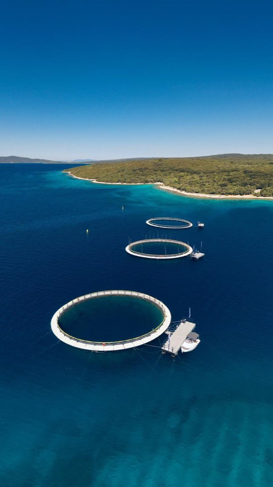
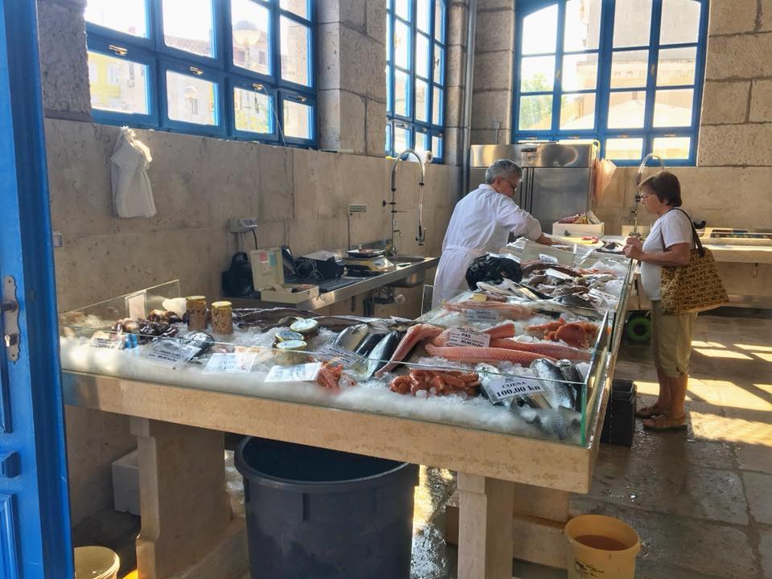
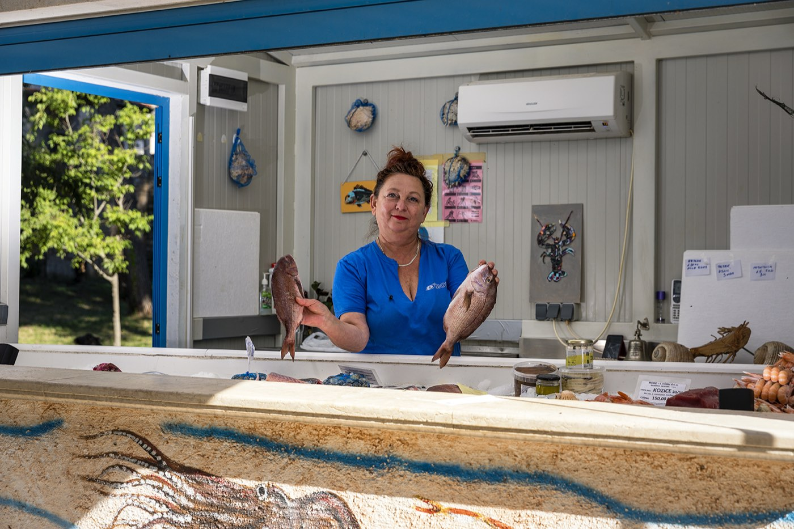
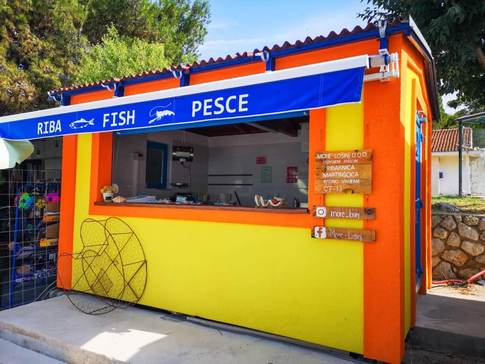
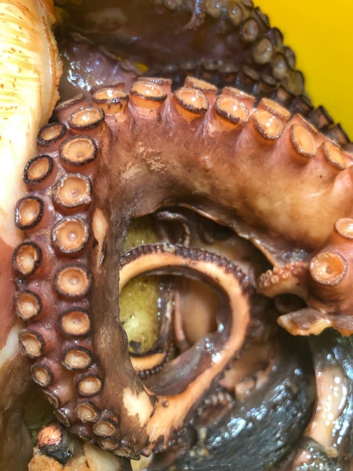
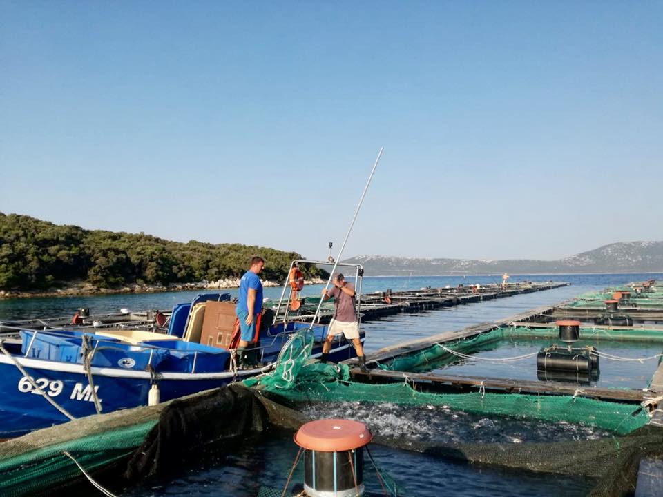
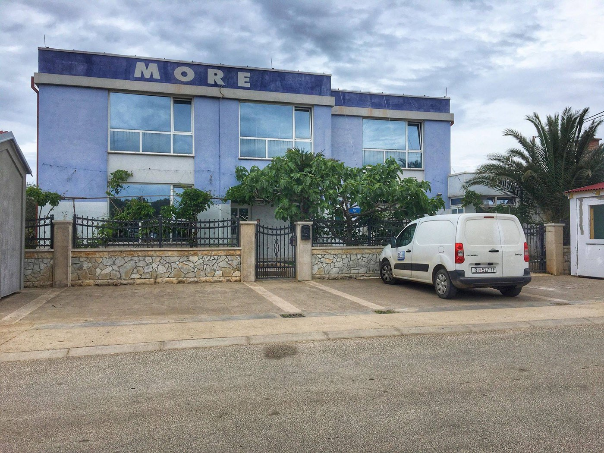

Uzgoj u uvali Kaldonta
Na Cresu, nedaleko od Punta Križe. Nakon više pokušaja s drugim vrstama zaključili smo da je položaj najpogodniji za orade i brancine, pa uzgajamo isključivo njih.
Uzgajamo orade i brancine u uvali Kaldonta na Cresu, otkupljujemo svježu ribu od domaćih ribara i sve to prodajemo u svojim ribarnicama na Lošinju i Cresu. Na svim lokacijama cijene su jednake.



More-Lošinj uzgaja bijelu ribu, oradu i brancina, a uz to prodaje uvoznu smrznutu i svježu ribu, morske plodove, glavonošce i rakove. Svježu ribu otkupljujemo od domaćih ribara i prodajemo je u svojim poslovnicama na Lošinju i Cresu.
U uzgoju smo od 1999. godine i, kako sami kažemo, najmanje smo uzgajalište u Hrvatskoj, prepoznatljivo po kvaliteti uzgojne ribe. Ribogojilište je u uvali Kaldonta na Cresu, a sjedište tvrtke u Malom Lošinju.
Uzgoj u Kaldonti, otkup od domaćih ribara i prodaja u vlastitim ribarnicama na Lošinju i Cresu.
Na Cresu, nedaleko od Punta Križe. Nakon više pokušaja s drugim vrstama zaključili smo da je položaj najpogodniji za orade i brancine, pa uzgajamo isključivo njih.

Orade i brancine izlovljavamo iz kaveza, a svježu ribu od domaćih ribara otkupljujemo još od početaka obrta 1986. godine.

U Malom Lošinju, Nerezinama i Martinšćici, po istim cijenama. Ribu prodajemo i veleprodajno, na domaćem i stranom tržištu.
Orada i brancin iz našeg uzgoja, riba domaćih ribara, školjke, rakovi i glavonošci. Cijene su po kilogramu i jednake u svim ribarnicama.
Od pulta u gradskoj ribarnici 1990., preko Nerezina 2008., do Martinšćice na Cresu 2019. godine.
Pult u gradskoj ribarnici u centru Malog Lošinja, od 1990.
Otvori kartu
Obala nerezinskih pomoraca 1, 51554 Nerezine. Otvorena 2008.
Otvori kartu
Ribarnica u Martinšćici na otoku Cresu, otvorena 2019.
Otvori kartuNa svim lokacijama cijene su jednake.
Povucite vodoravno za više fotografija.







Imamo tri ribarnice: u gradskoj ribarnici u centru Malog Lošinja, u Nerezinama (Obala nerezinskih pomoraca 1) i u Martinšćici na otoku Cresu.
Da. Na svim lokacijama cijene su jednake, a izražene su po kilogramu. Cijeli cjenik je na stranici Cjenik.
Orade i brancini su iz našeg uzgajališta u uvali Kaldonta na Cresu. Uz to otkupljujemo svježu ribu od domaćih ribara i nudimo uvoznu smrznutu i svježu ribu, morske plodove, glavonošce i rakove.
Da. Uzgojnu ribu plasiramo na domaća i strana tržišta, u maloprodaji i veleprodaji. Za upite o prodaji i distribuciji nazovite 051 233 465 ili pišite na morelosinj2155@gmail.com.
Hrvatska gospodarska komora 2018. dodijelila nam je naljepnice „Riba Hrvatske” kojima je naša uzgojna riba označena kao izvorni hrvatski proizvod.
Za sve upite o proizvodima, prodaji i distribuciji javite nam se telefonom ili e-mailom.